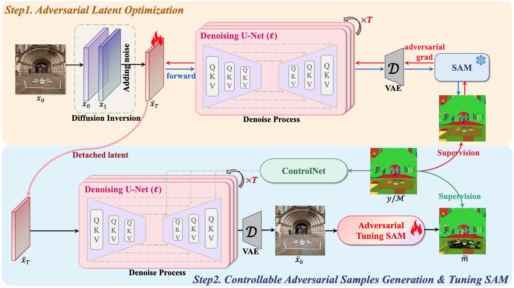
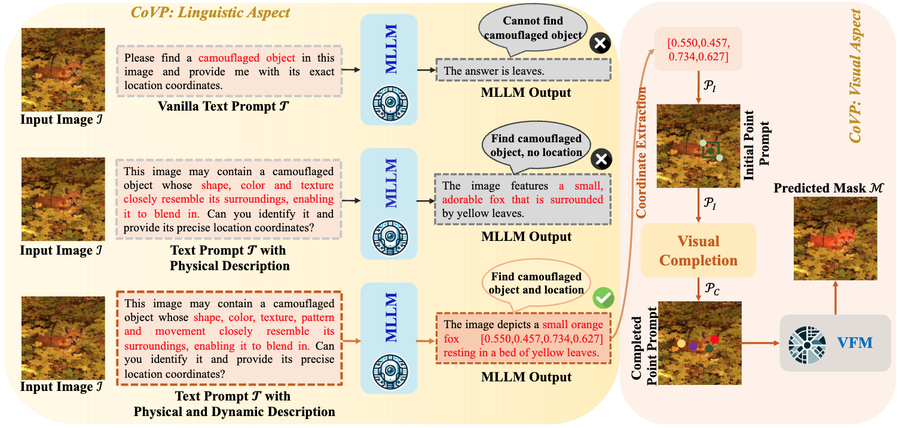

Selected Publications
(More in here) and (Google Scholar)

Bo Li, Haoke Xiao, Lv Tang
ASAM: boosting segment anything model with adversarial tuning.
[Paper], Accepted to [CVPR 2024].

Lv Tang, Peng-Tao Jiang, Haoke Xiao, Bo Li* (Corresponding author)
Towards training-free open-world segmentation via image prompting foundation models.
[Paper], Accepted to [IJCV 2024].
